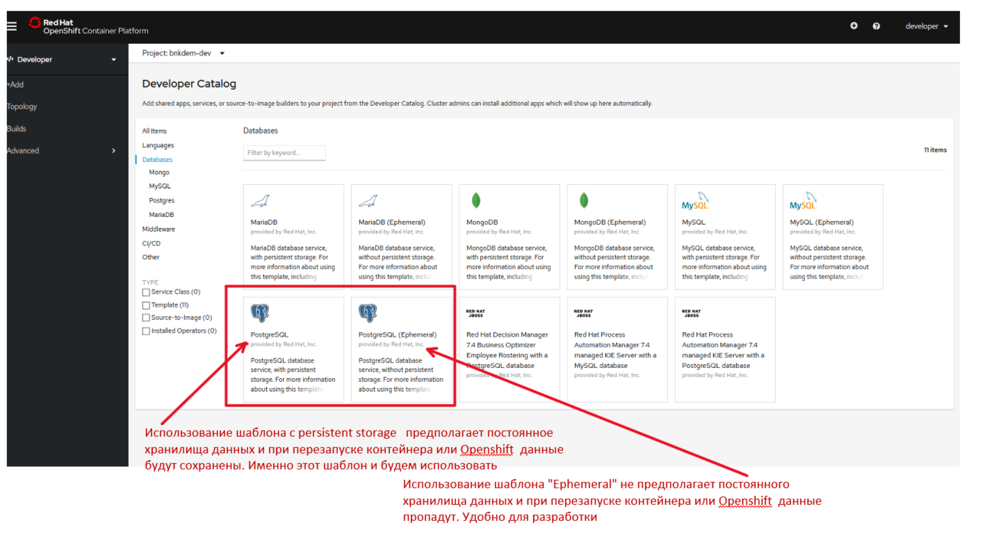
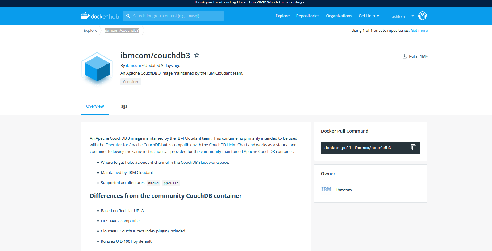
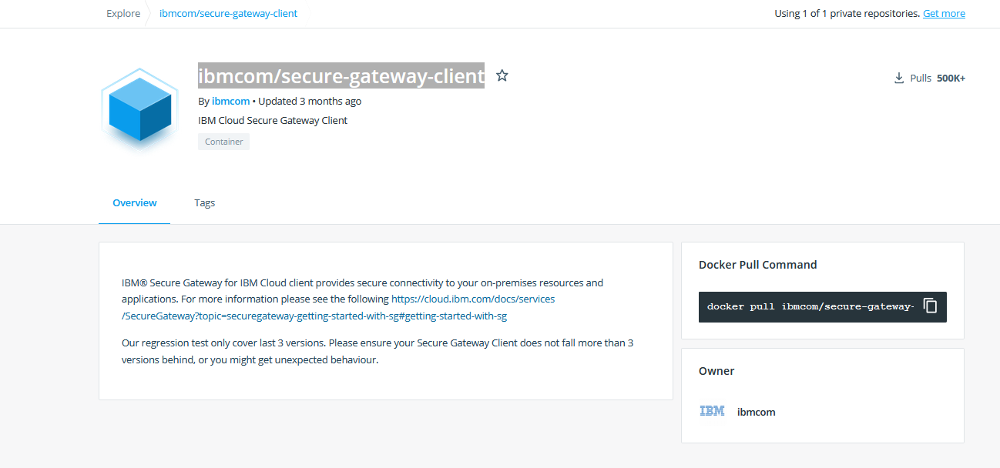
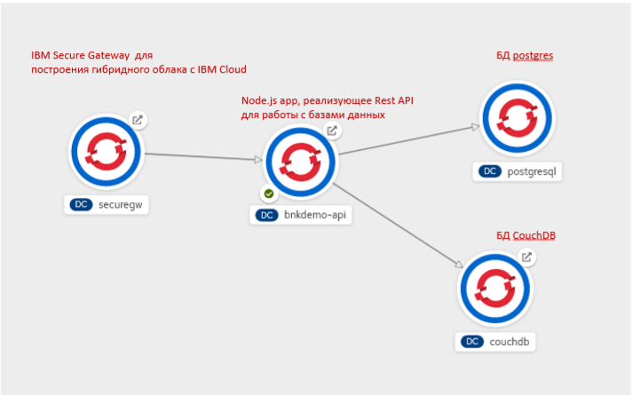
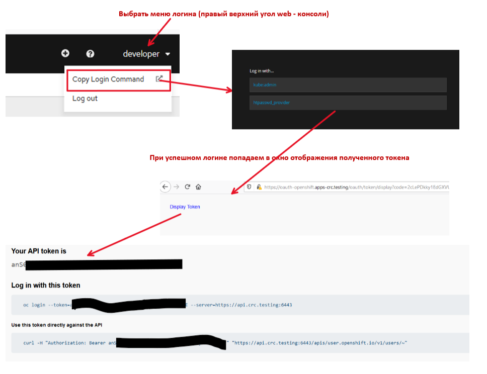
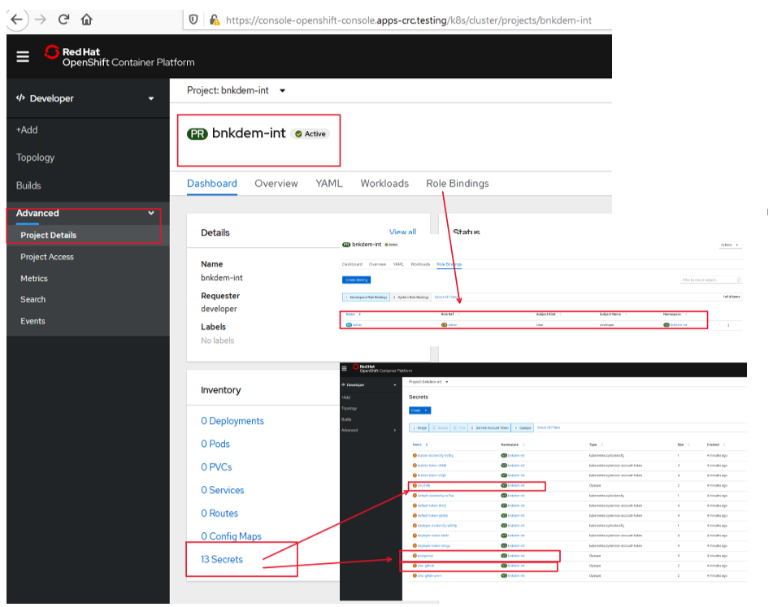
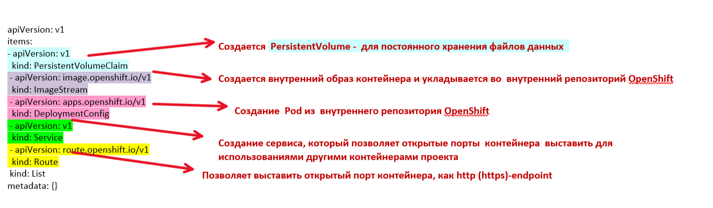
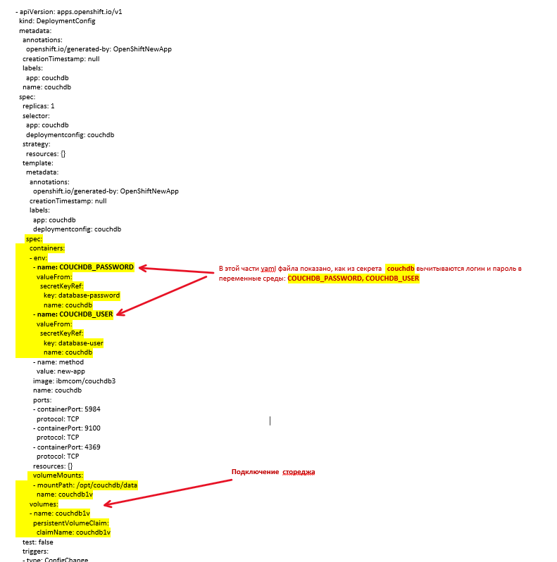

Целью данной работы является демонстрация возможностей развертывания многокомпонентных приложений на платформе OpenShift.
В лабораторной работе будут выполнены такие этапы:
создание проекта и его подготовка для deployment в него многокомпонентных приложений с помощью oc cli.
deployment реляционной базы данных postgres с предустановленного каталога шаблонов, который присутствует в openshift с помощью oc cli, pic-1. 
pic-1

pic-2
deployment Rest API разработанного на базе Node.js express из исходного кода, размещенного в GitHub.
deployemnt клиентской части IBM Secure Gateway с Docker репозитория как контейнер ibmcom/secure-gateway-client.

pic-3
В результате выполнения работы будет построена топология компонентов приложения, показанная на pic-4

pic-4
В корне каталога ./openshift находится набор .cmd файлов для создания проекта. Основная цель этого пакета файлов - создать проекты в зависимости от среды и создать дополнительны сущности, которые называются "secrets", для автоматического подключения к gitHub-репозиториям, хранения параметров подключения к базам данных. Ниже - перечень этих файлов с пояснениями
Для нашего случая название проекта: "bnkdem", а суффиксы берться из таблицы. Таким образом, в зависимости от переданного параметра среды, будут создаваться названия проектов как в колонке 3.
| идентификатор среды | Наименование среды | Названия проектов |
|---|---|---|
| dev | Среда разработки | bnkdem-dev |
| int | Среда тестирования | bnkdem-int |
| prod | Среда продуктивная | bnkdem-prod |
Фрагмент файла, где формируется имя проекта показан ниже:
set BUILD_ENV=%1
echo SET Project parameters
set PRJ-NAME=bnkdem
set PRJ-DISP=bnkdem
set PRJ-DESCR=bnkdem
echo SET ENV marker
set PRJ-NAME=%PRJ-NAME%-%BUILD_ENV%
set PRJ-DISP=%PRJ-DISP%-%BUILD_ENV%
set PRJ-DESCR=%PRJ-DESCR%-%BUILD_ENV%
Файл описывающий логин с openshift кластер. в даном случае используется команда:
oc login
Можно залогинится по логину и паролю, а лучше по токену
oc login --your token --server=your-claster-api-url
На pic-5 показано, как получить логин с токеном

pic-5
crt_prj_opshift.cmd Выполняет пакетное создание проекта и всех секретов. Приложения создаются в отдельном пакете файлов, в зависимости от среды.
del_prj_opshift.cmd
Выполняет пакетное удаление проекта и всех его приложений
grn_prj_opshift.cmd Дать права на проект другим разработчикам
rev_prj_opshift.cmd забрать права на проект
crt_prj_secret.cmd Создать секреты внутри проекта. Ниже в квадратных скобках указано [какие реквизиты для подключения к gitHub] нужно внести:
echo ****************************************
echo * create secret to gitLab
echo *
echo ****************************************
oc create secret generic sinc-gitlab-pvx-1 --from-literal=username=[your gitlab login] --from-literal=password=[your gitlab password]
oc secrets link deployer sinc-gitlab-pvx-1
oc secrets link builder sinc-gitlab-pvx-1
oc annotate secret sinc-gitlab-pvx-1 "build.openshift.io/source-secret-match-uri-1=[your gitlab login uri https://github.com/[you login] ]
В данном случае создание секрета к github выполняется полностью набором команд oc. Дальше необходимо создать секреты для подключения к базам данных. Поэтому используется другой, универсальный механизм создания объектов в openshift с использованием конфигурационного *.yaml файла.
echo ****************************************
echo * create secret to couchDB
echo *
echo ****************************************
oc create -f couchdb-secret.yaml
echo ****************************************
echo * create secret to postgresDB
echo *
echo ****************************************
oc create -f postgresdb-secret.yaml
stringData:
database-password: [password]
database-user: [login]
stringData:
database-name: [database name]
database-password: [password]
database-user: [login]
Для создания проетка на среде int нужно запустить указанный ниже командный файл
crt_prj_opshift.cmd int
В результате создания сгенерируется такой лог:
C:\PSHDEV\PSH-WorkShops\THINK2020\repo\wa\think2020-bnkapi\openshift>crt_prj_opshift.cmd int
Active code page: 65001
**************************************************************
* CREATE PROJECT ON OPENSHIFT
**************************************************************
set project and login
============================================================================
SET Evironment variables for project
============================================================================
SET Project parameters
SET ENV marker
PRJ-NAME=bnkdem-int
PRJ-DISP=bnkdem-int
PRJ-DESCR=bnkdem-int
**************************************************************
* Login script on OPENSHIFT
**************************************************************
* oc login --server --token=
* oc login --server -u -p
**************************************************************
*************************************************************
* Openshift CLI URL=
*************************************************************
Logged into "https://api.crc.testing:6443" as "developer" using the token provided.
You have access to the following projects and can switch between them with 'oc project <projectname>':
* bnk-dev
bnkdem-dev
bnkdem-prod
Using project "bnk-dev".
create project
Now using project "bnkdem-int" on server "https://api.crc.testing:6443".
You can add applications to this project with the 'new-app' command. For example, try:
oc new-app ruby~https://github.com/sclorg/ruby-ex.git
to build a new example application in Python. Or use kubectl to deploy a simple Kubernetes application:
kubectl create deployment hello-node --image=gcr.io/hello-minikube-zero-install/hello-node
NAME DISPLAY NAME STATUS
bnk-dev Active
bnkdem-dev bnkdem-dev Active
bnkdem-prod bnkdem-prod Active
Already on project "bnkdem-int" on server "https://api.crc.testing:6443".
************************************
* create secrets
************************************
****************************************
* create secret to git
*
****************************************
secret/sinc-gitlab-pvx-1 created
secret/sinc-gitlab-pvx-1 annotated
secret/sinc-github created
secret/sinc-github annotated
****************************************
* create secret to couchDB
*
****************************************
secret/couchdb created
****************************************
* create secret to postgresDB
*
****************************************
secret/postgresql created
************************************
* grant access to developers
************************************
****************************************
* Прдоставить другому разработчику права администратора проекта
*
****************************************
C:\PSHDEV\PSH-WorkShops\THINK2020\repo\wa\think2020-bnkapi\openshift>
Для удаления проетка на среде int нужно запустить указанный ниже команндный файл
crt_prj_opshift.cmd int
Ниже показан лог раобты комнады удаления
C:\PSHDEV\PSH-WorkShops\THINK2020\repo\wa\think2020-bnkapi\openshift>del_prj_opshift.cmd int
Active code page: 65001
**************************************************************
* DELETE PROJECT ON OPENSHIFT
**************************************************************
set project and login
============================================================================
SET Evironment variables for project
============================================================================
SET Project parameters
SET ENV marker
PRJ-NAME=bnkdem-int
PRJ-DISP=bnkdem-int
PRJ-DESCR=bnkdem-int
**************************************************************
* Login script on OPENSHIFT
**************************************************************
* oc login --server --token=
* oc login --server -u -p
**************************************************************
*************************************************************
* Openshift CLI URL=
*************************************************************
Logged into "https://api.crc.testing:6443" as "developer" using the token provided.
You have access to the following projects and can switch between them with 'oc project <projectname>':
bnk-dev
bnkdem-dev
* bnkdem-int
bnkdem-prod
Using project "bnkdem-int".
project.project.openshift.io "bnkdem-int" deleted
NAME DISPLAY NAME STATUS
bnk-dev Active
bnkdem-dev bnkdem-dev Active
bnkdem-int bnkdem-int Terminating
bnkdem-prod bnkdem-prod Active
C:\PSHDEV\PSH-WorkShops\THINK2020\repo\wa\think2020-bnkapi\openshift>
Зайдя в web-console openshift можем проверить результаты создания проекта (pic-6)

pic-6
В зависимости от среды в подкаталогах:
./dev
./int
.prod
находится набор пакетных файлов и настроек переменных среды для создания прикладных компонентов проекта, индивидуальных для каждой среды. В каждом каталоге находится одинаковый набор файлов. Разница может быть в настройках переменных среды.
crt_app.cmd Общий скрипт для последовательного пакетного создания всех прикладных компонентов
1-crt_app.cmd Создать один компонент, который передается в виде параметра.
crt_app_couchdb.cmd, crt_app_couchdb.yaml Командный файл создания couchDB из docker-контейнерного. Файл crt_app_couchdb.yaml - содержит описание компонентов, которые будут созданы в процессе выполнения. На pic-7 показаны блоки yaml-файла с пояснениями выполняемых функций

pic-7
А на pic-8 показаны фрагменты, показывающие подключение стореджа и переменных среды.

pic-8
crt_app_pgdb.cmd crt_app_pgdb.yaml Командный файл дя создания postgres DB. Фай crt_app_pgdb.yaml содержит описание компонентов, которые будут созданы в процессе выполнения.
crt_app_bnkdemo-api.cmd, bnkdemo-api.env Командный файл, для создания Node.JS приложения реализующее REST API для работы с базами данных. Файл bnkdemo-api.env содержит перечень переменных среды, которые будут установлены в процессе развертывания.
Тут приложение создается командой oc new-app
oc new-app https://github.com/pavlo-shcherbukha/bnkapidemo.git#master --context-dir=/src/bnkdemo-be --name="bnkdemo-api" --env-file ./bnkdemo-api.env --strategy=source --source-secret=sinc-github --image-stream=openshift/nodejs:10-SCL -l app=bnkdemo-api
При этом параметризуется: URL github репозитория, с которого будут доставаться исходники Node.js, через знак "#" указывается имя git branch
Относительная папка, с котроый взять исходники, указывается в ключе --context-dir
--context-dir=/src/
Ключ --env-file ссылкается на файл с переменными среды, которые будут созданы в процессе deployment
--env-file ./bnkdemo-api.env
Ключ --strategy=source уточняет, что развертывание приложения будет выполнено из репозитория исходного кода, а не из docker образа
Ключ --source-secret=sinc-github указывает на секрет с параметрами подключения к github для клонирования репозитория.
Ключ --image-stream=openshift/nodejs:10-SCL указывает на базовый образ, в который будут копироваться исходники и потом собираться итоговый образ приложения.
По линку Container images offer lightweight and self-contained software to enable deployment at scale. можно найти документацию и описание использования контейнеров. В даном случае, так как используется однопользовательская версия используется образ: https://github.com/nodeshift/centos7-s2i-nodejs
После создания самого компонента следует следующая команда, по созданию http - роутера, чтобы копонент стал доступным снаружи проекта.
echo ****************************************
echo * create bnkdemo-api Router
echo *
echo ****************************************
oc expose svc/bnkdemo-api --hostname="bnkapi-bnkdem-dev.apps-crc.testing" --name="bnkapi-bnkdem-dev.apps-crc.testing" --port 8080 -l app=bnkdemo-api
В данном случае, хочется обратить внимание, что --hostname состоит из вполне определенных реквизитов: "bnkapi-bnkdem-dev.apps-crc.testing"
следуя этим правилам, можно обеспечить не повторяемость роутеров.
Создание клиентской части (не облачной) IBM Secure GateWay.
a name="p2-5">
Необходимо указать URL DNS openshift кластера в файлах:
crt_app_bnkdemo-api.cmd
crt_app_securegw.cmd
crt_app_couchdb.yaml в разделе Route
kind: Route
metadata:
creationTimestamp: null
labels:
app: couchdb
name: db-bnkdem-dev.apps-crc.testing
spec:
host: db-db-bnkdem-dev.apps-crc.testing
Указать параметры подклчения к базам данных в файле: bnkdemo-api.env.
Для запуска deployment нужно запустить набор пакетных файлов с указанием среды deployment
cd int
crt_app.cmd int
Лог создания приложений показан ниже
C:\PSHDEV\PSH-WorkShops\THINK2020\repo\wa\think2020-bnkapi\openshift>cd int
C:\PSHDEV\PSH-WorkShops\THINK2020\repo\wa\think2020-bnkapi\openshift\int>crt_app.cmd int
**************************************************************
* CREATE APP IN OPENSHIFT
**************************************************************
set project and login
============================================================================
SET Evironment variables for project
============================================================================
SET Project parameters
SET ENV marker
PRJ-NAME=bnkdem-int
PRJ-DISP=bnkdem-int
PRJ-DESCR=bnkdem-int
**************************************************************
* Login script on OPENSHIFT
**************************************************************
* oc login --server --token=
* oc login --server -u -p
**************************************************************
*************************************************************
* Openshift CLI URL=
*************************************************************
Logged into "https://api.crc.testing:6443" as "developer" using the token provided.
You have access to the following projects and can switch between them with 'oc project <projectname>':
bnk-dev
bnkdem-dev
* bnkdem-int
bnkdem-prod
Using project "bnkdem-int".
Already on project "bnkdem-int" on server "https://api.crc.testing:6443".
****************************************
* create CouchDB
*
* ./couchdb.env - contains database admin and password
* docker pull ibmcom/couchdb3
* https://hub.docker.com/r/ibmcom/couchdb3
* иммитация --output=yaml --dry-run
****************************************
No resources found
persistentvolumeclaim/couchdb1v created
imagestream.image.openshift.io/couchdb created
deploymentconfig.apps.openshift.io/couchdb created
service/couchdb created
route.route.openshift.io/db-bnkdem-dev.apps-crc.testing created
****************************************
* create Postgres DB from template
*
****************************************
No resources found
service/postgresql created
persistentvolumeclaim/postgresql created
deploymentconfig.apps.openshift.io/postgresql created
****************************************
* Router не нуже БД работает по своему протоколу
* Нужно сделать port forward для работы с psql
* oc port-forward postgresql-1-97dtc 15432:5432
*
****************************************
****************************************
* create bnkdemo-api
*
****************************************
No resources found
warning: Cannot check if git requires authentication.
--> Found image 4b4fcd7 (5 months old) in image stream "openshift/nodejs" under tag "10-SCL" for "openshift/nodejs:10-SCL"
Node.js 10
----------
Node.js 10 available as container is a base platform for building and running various Node.js 10 applications and frameworks. Node.js is a platform built on Chrome's JavaScript runtime for easily building fast, scalable network applications. Node.js uses an event-driven, non-blocking I/O model that makes it lightweight and efficient, perfect for data-intensive real-time applications that run across distributed devices.
Tags: builder, nodejs, nodejs10
* The source repository appears to match: nodejs
* A source build using source code from https://github.com/pavlo-shcherbukha/bnkapidemo.git#master will be created
* The resulting image will be pushed to image stream tag "bnkdemo-api:latest"
* Use 'oc start-build' to trigger a new build
* WARNING: this source repository may require credentials.
Create a secret with your git credentials and use 'oc set build-secret' to assign it to the build config.
* This image will be deployed in deployment config "bnkdemo-api"
* Port 8080/tcp will be load balanced by service "bnkdemo-api"
* Other containers can access this service through the hostname "bnkdemo-api"
--> Creating resources with label app=bnkdemo-api ...
imagestream.image.openshift.io "bnkdemo-api" created
buildconfig.build.openshift.io "bnkdemo-api" created
deploymentconfig.apps.openshift.io "bnkdemo-api" created
service "bnkdemo-api" created
--> Success
Build scheduled, use 'oc logs -f bc/bnkdemo-api' to track its progress.
Application is not exposed. You can expose services to the outside world by executing one or more of the commands below:
'oc expose svc/bnkdemo-api'
Run 'oc status' to view your app.
****************************************
* create bnkdemo-api Router
*
****************************************
route.route.openshift.io/bnkapi-bnkdem-dev.apps-crc.testing exposed
Press any key to continue . . .
C:\PSHDEV\PSH-WorkShops\THINK2020\repo\wa\think2020-bnkapi\openshift\int>
Инструкция по запуску на выполнение DDL-скриптов находится в файле src/ddl-bnk/readme.md